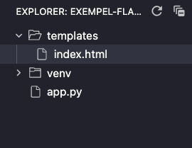

Kapitel 2 - Skapa dynamik
#I förra kapitlet så kom vi igång med hur vi passar en sträng till webbläsaren från Flask. I detta kapitel får vi bekanta oss med att skapa lite roligare innehåll i våran applikation.
Html istället för sträng
#
I förra kapitlet så skickade vi en sträng till webläsaren. Detta är
inte så användbart i längden. Vi vill kunna skicka html till
webbläsaren. Detta kan vi göra genom att använda oss av en funktion
som heter render_template. Denna funktion finns färdig i
paketet flask och vi kan importera den genom att skriva
följande kod:
from flask import render_template
Render Template är en funktion som tar emot en sträng som argument.
Denna sträng är sökvägen till en html-fil. Flask kommer att leta efter
denna fil i en mapp som heter templates. Vi kan skapa
denna mapp i vårat projekt och skapa en fil som heter
index.html i denna mapp. Vi kan sedan skriva följande kod
i denna fil:
<h1>Hello World!<h1>Så här ska strukturen se ut:

Nu gör vi om vår index()-funktion från det första
kapitlet så att den använder render_template-funktionen
istället för att skicka en sträng:
from flask import Flask, render_template # Glöm inte att importera klassen Flask
app = Flask(__name__)
@app.route("/")
def index():
return render_template("index.html") # Funktion med argumentet index.html
if __name__ == "__main__":
app.run(debug=True)Nu när vi sparat båda filerna så kan vi uppdatera sidan i webbläsaren:
Nu returerar din server tillbaks din html-sida till användaren istället för en sträng, som i första kapitlet.
Dynamiskt istället för statiskt
#
Men det här sättet är inte heller så användbart i längden. Vi vill
kunna skicka olika saker till webbläsaren beroende på vad användaren
vill se. Annars så skulle man köra en statisk sida som inte ändras.
Detta kan vi göra genom att skicka med en variabel till
render_template-funktionen, vi testar skicka med en liten
uträkning:
return render_template("index.html", variabel = 13 * 2)Blanda html och python
Eftersom html i sig är statiskt och inte kan utföra något annat än att strukturera på egen hand. Så krävs det ett annat programmeringspråk för att kunna utföra något. Flask använder sig av Jinja2 (hädan efter refererat som Jinja), som är ett templating-språk som är skrivet i python. Detta gör att vi kan använda oss av python i våra html-filer.Jinja kommer förinstallerat med flask, så du behöver inte installera något.
Vi tar emot en python-variabel
#Vi lägger nu till en rad i index.html:
<h1>Hello World!<h1>
<p>{{ variabel }}</p>Ladda om sidan, och där har du, istället för en konstig text med måsvingar eller sträng "13*2", så har python gjort som de ska och räknat ut 13*2 och skickat tillbaks 26.
Hur fungerar det här?
För att vi ska kunna använda oss av python i html-filer så måste flask tolka hela koden innan den skickas till webbläsaren. Detta gör den genom att läsa av hela filen och sortera ut vad som är html och vad som är Jinja. Där flask hittar måsvingar så vet den att det är Jinja och att det ska tolkas som python, mer eller mindre. I det här fallet så har vi skickat med en variabel som vi döpt till "variabel" och gett den värdet 13*2. Flask har då tolkat detta som en variabel som heter "variabel" och som python redan gett den värdet 26 innan flask gjorde sitt.
Ännu mer dynamik
#Nu har vi gjort vår första dynamiska html-sida. Vi ska exprementera mer med variabler i senare kapitel. Men först, så ska vi kolla på hur vi kan skapa ännu mer dynamiska sidor.
Vi börjar med att skapa en ny html-fil i mappen
templates, den kan vi döpa till
template.html (vissa väljer att döpa den till layout
osv.). I denna fil så skriver vi följande kod:
<html>
<head>
<title>Exempel</title>
</head>
<body>
{% block content %} <!-- Notera: % -->
Något gick fel, kunde inte ladda innehåll!
{% endblock %}
</body>
</html>Detta kommer att vara vårat skal till sidan. Här kan vi till exempel göra all layout utan att behöva ändra på fler statiska sidor, vilket kan bli jobbigt redan efter några stycken html-sidor.
Innehållet på sidan tar vi in dynamsikt. Men vi måste anpassa vår befintliga kod en del.
Vi börjar med att skriva om innehållet i index.html lite
så här:
{% extends "template.html" %}
{% block content %}
<h1>Hello World!</h1>
<p>{{ variabel }}</p>
{% endblock %}Kodsammanfattning
Vi har nu gjort följande:
-
Lagt till
{% extends "template.html" %}som säger att vi ska använda oss avtemplate.htmlsom grundmall. -
Vi har också lagt till
{% block content %}och{% endblock %}som säger att allt som står mellan dessa två rader ska ersätta{% block content %}itemplate.html. -
Skulle det inte finnas någon
{% block content %}, eller bli något annat fel på sidan så kommer felmeddelandet som vi har skrivit mellan{% block content %}och{% endblock %}itemplate.htmlatt visas. -
Detta gör att vi kan skriva innehållet i
index.htmloch sedan använda oss avtemplate.htmlsom grundmall.
Resultatet bör nu vara exakt lika som innan, men uppdelat på två filer. Därför ska vi i nästa kapitel skapa ännu en sida för att göra exemplet tydligare.
Måsvingar och procent-tecken?
I exemplet ovan ser vi använding av två av de vanligaste markrörerna (synopsis) i Jinja. Skillnaden mellan dessa är att måsvingarna används för att skicka tillbaks något till webbläsaren, medans procent-tecknen används för att utföra något i själva koden.